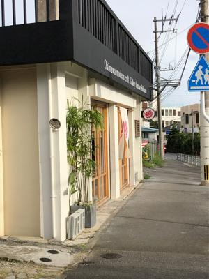
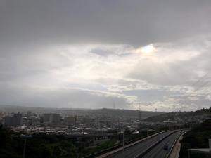
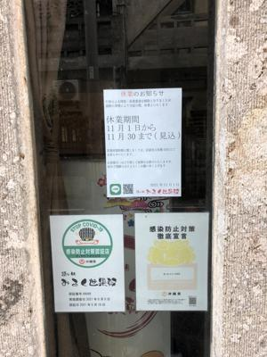

うるがいの話 ある日
最新: パレット久茂地【うるがいの話 ある日】とは 一日だけのプログです
『うるがいの話』の最新一日だけのプログで、通信料が少なく経済的だ。カニの画像をクリックすると全ての日付が載る『うるがいの話』サイトを表示します
|
|
【うるがいの話】 うるがい(ｳﾙｶﾞｲ urugai)とは、『もずくがに』の名前でとても大きくなります。 |
|---|---|
|
|
【カミマヤーの話】 猫のことを方言でマヤーといいます。カミマヤーとは、神の猫のことです。 |
|
【タナガーの話】 たながー（ﾀﾅｶﾞｰtanagaa）とは手長えびのことで、何種類かあり大きいのは車 エビぐらいになります。 |

|
【ぶながぁの話】 ぶながー(bunagaa)とは、赤い髪の毛、赤い身体、そして身長は１ｍ２０ｃｍ ぐらい、川の蟹を食べているの目撃された。場所は沖縄県国頭郡大宜味村のと ある村僕の隣近所に住んでいる爺さんから、聞いた話です。 |
|
|
【ギーマの話】 ギーマ(giima)とは、山原の里山に咲くスズランに似た、 花を付けます。実は食べられます、 気が付くと口の周りが紫になっています。 |
2021年12月03日 (金）パレット久茂地
16:35
  
ヨメのお供でパレット久茂地に行く。おぇー、パレット久茂地の地下駐車場に
止めるべく同じ駐車場へ行くであろう、車の列が凄い事になっている。今日は
金曜日なのに・・・、嫁を下して駐車場へいく列に並ぶ。そうして、３０分が
過ぎ駐車場への入り口あと２台待ちになった状態で、ヨメから『買い物終わっ
たよ』と連絡がくる。結局、駐車場へは入らずパレット久茂地を後のする。コ
ドモが先月に続き空港へ、２階の出発口で降ろそうとするが車が一杯！、一旦
やり直すことにして、２回目の挑戦、またしても止める箇所がない。やもえず
降ろす場所の最後のポールがある所で、コドモを下す。なんなんだ、今日は金
曜日なのに。
１６時３１分 ビットコインの総資産 ￥１８，６７４